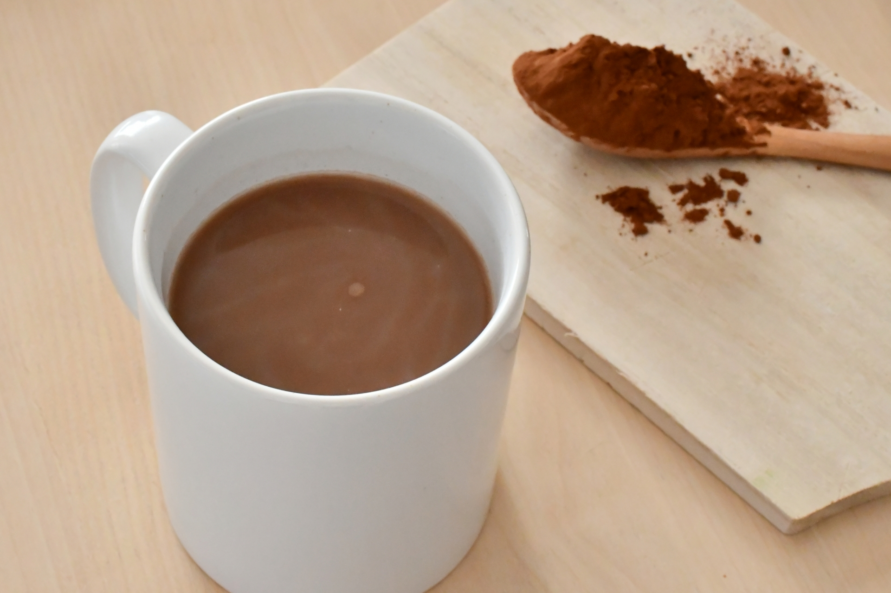
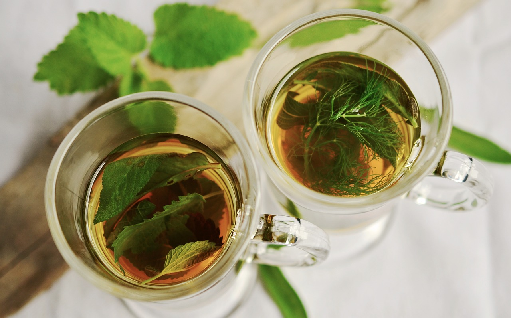
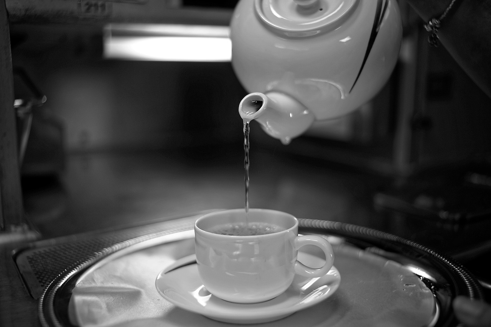

快眠企画
就寝前の行動
就寝三時間前（食事を済ます）
食べてすぐに寝てしまうと、身体は消化を優先するので内蔵が休まる時間が短くなり、眠りが浅くなってしまいます。そのため、就寝前には消化が終わっているのが理想的です。
就寝二時間前（お酒を禁止、入浴）
アルコールを摂取すると寝つきは良くなりますが眠りを足者にしてしまいます。また利尿作用もあるので、夜中、目が覚めてしまう原因にもなってしまいます。
また入浴についてですが、就寝直前に熱いお湯につかると、交感神経が高まり、寝つきが悪くなります。
リラックス効果を得るために、ぬるめのお湯に入り、体をじっくり温めるのもおすすめです。徐々に深部体温が下がって、ちょうど就寝時に眠りにつきやすい状態になります。
就寝一時間前（スマホ、ストレッチ）
スマホから発せられるブルーライトには脳を覚醒させる作用があります。見るのは１時間前までにしましょう。
就寝前にストレッチをするのがおすすめです。軽い運動をすることで身体が適度に疲れ、自然に眠気が生じて入眠しやすくなります。
就寝前（飲料）
就寝前に一度身体を温めてから深部体温を下げることでより睡眠の質が高まります。そんな就寝前に飲みたい飲み物を紹介します。
-
ホットミルク
ミルクにはメラトニンという睡眠ホルモンを作る原料となるトリプトファンが含まれているため、安眠効果が期待できます。さらにミルクは消化吸収に優れているため、就寝前におすすめです。

-
ホットココア
ココアにはテオブロミンという自律神経を整えて寝つきを良くしたり、眠りが深くなるなる作用のある成分が含まれているため、睡眠の質が高まります。
しかし、注意すべき点があります。入眠前に砂糖をたくさん摂取すると血糖値が上昇して睡眠の質が下がるので、砂糖やミルクが含まれていないピュアココアを選びましょう。 -
ハーブティー
ハーブのほとんどは、覚醒作用や利尿作用を持つカフェインが含まれていないため、就寝直前でも安心して飲むことができます。
ただし、生理促進作用や子宮を収縮する作用など、妊娠中の方は飲用を避けたほうがいいハーブもあるので主治医に相談してください。
良質なハーブの例
- カモミール
- オレンジフラワー（不眠や不安、ストレス改善
- ラベンダー（鎮静効果、抗うつ効果）
- ローズ（感情や気分を落ち着かせる）
 -
ホットジンジャー
生姜には血行をよくして体を温める効果が期待できます。ただし、あまりにも多くの生姜を入れてしまうと胃腸に負担がかかるのでやめましょう。
-
白湯
飲むと、内臓から体が温まるため、睡眠モードの副交感神経が優勢になり、リラックス効果があるといわれています。さらに、ゆっくりと時間をかけて飲むことで、よりリラックスできます。

環境
睡眠の質を上げる環境には以下のようなものがあります。
- アイマスク
- 遮光カーテン
- アロマオイル
- 音楽を聴く（テレビやラジオのかけ流しは禁止）
- 室温
夏場：約25～26℃
冬場：約15～18℃
湿度：50～60％

理想の寝姿勢
仰向けになってもその姿勢が自然に保たれている状態のことを言います。仰向けで立った時と同じ姿勢で寝ると体の圧力が均等に分散されるため、血液が体のすみずみまで循環しやすくなり、十分な休息を与えることができます。また、横向きの場合でも背骨が真っすぐになることで、頭が適切な高さで支えられ首や肩にかかる負担を抑えます。
体の不調におすすめの寝姿勢
体が不調な時それを緩和させる効果的な寝姿勢を紹介します。
腰痛もち
足の間にクッションを挟む
横向きに寝て、足の間に薄めのクッションを挟み、腰と足の高さが水平になるので腰の痛みが緩和されます。
タオルを3つ折りにして腰の下に敷く
タオルを細長く3つに折り、腰とマットレスの間の隙間を埋めるように敷きます。
呼吸が苦しいとき
仰向け
大きめのクッションやまくら、または掛布団を使って頭を上げ、ひざを曲げると楽に寝ることが出来ます。
横向け
まくらやクッションを抱きながら、苦しくなる向きで姿勢を安定させましょう。姿勢が整ったら、手足の力を抜いてリラックスしながら口すぼめ呼吸をすると楽になります。
妊婦さんの姿勢
シムス位（回復体位）体を横向きにしたまま上側の足を前に出して、ひざを床につけて寝る姿勢のことを言います。おなかも大きくなるにつれて、おなかが押され苦しくなることもあります。その時は床面につく膝の下に、まくらや座布団などを入れて、膝の高さを調節しましょう。
寝具の選び方
- まくらの高さ
- 起きたときに首や肩が凝っている、胸の筋肉が張るなど筋肉の緊張が取れてないときは枕と頸椎のカーブがあっていないと考えられます。専門店で自分の首のカーブの角度を計測してもらうようにしましょう。
- 敷布団の硬さ
- 柔らかすぎると腰痛、硬すぎると骨が当たって痛み、血流が悪くなり、寝つきが悪くなります。
実際に店頭で試したり、短期間のレンタルサービスなどを利用して適度な硬さをもったもの選びましょう。寝る前はTシャツやスウェットをパジャマ代わりにせず、きちんと寝る用途向けに作られたパジャマを着用しましょう。